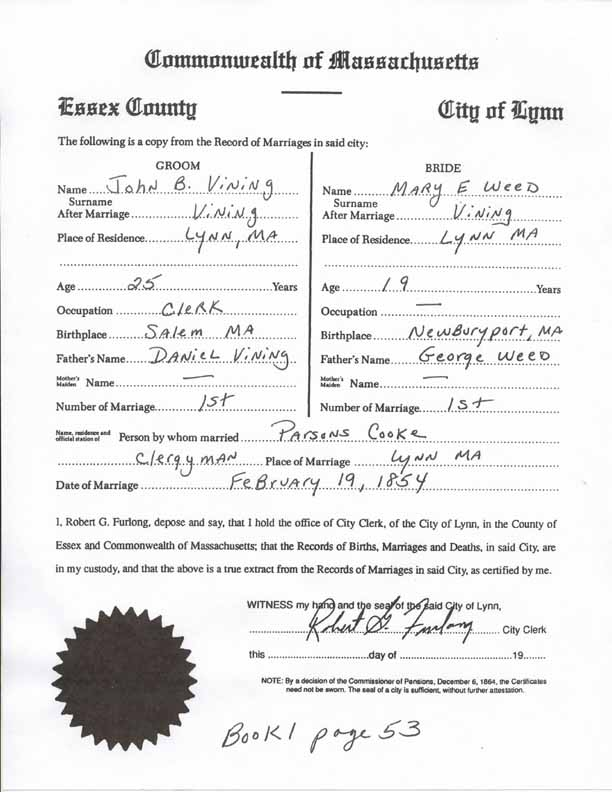

Marriage Data
Marriage record for John Blake Vining and Mary Elizabeth Weed:
Census Data
| 1860 | 1870 | 1880 | 1890 | 1900 | 1910 | |
| John Blake Vining | 35 | 45 | 52 | ? | ? | ? |
| Mary Elizabeth (Weed) Vining | dead | |||||
| Martha A. (Dwinells) Vining | 27 | 37 | 47 | ? | ? | ? |
| Frank Melvin Vining | 6 | not living in this household | ||||
| Emma Vining | 2 | [see note below] | ||||
| Fred P. Vining | 6 | 15 | married [and living in separate household?] | |||
| Emma D. Vining | 3 | 13 | married [and living in separate household?] | |||
| Florence E. Vining | 1 | 11 | ? | ? | ? | |
| Wilbur C. Vining | 6 | ? | married and living in separate household |